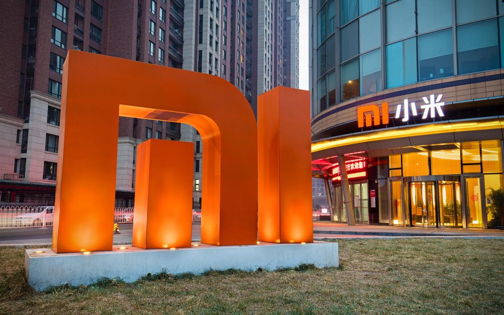
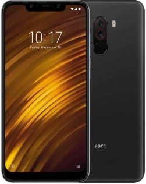

Смартфоны xiaomi 2020

С начала 2020 года компания
Xiaomi
активно занялась выпуском новых моделей мобильных устройств. Они предназначены для различных категорий пользователей, поэтому различаются по характеристикам, мощности и внешнему облику. Предлагаем познакомиться с лучшими телефонами Xiaomi, которые завоевали признание потребителей.
Pocophone F1
Помимо уже существующих многочисленных моделей начиная от бюджетников и заканчивая флагманскими аппаратами, недавно был представлен новый суббренд для реализации на мировом рынке Pocophone F1.

Xiaomi Pocophone F1 стал первооткрывателем новой линейки и позиционируется как бюджетный флагман с топовыми характеристиками. Со стартовой стоимостью 300$ (20 200 р.), это самый дешёвый телефон на рынке оснащённые процессором Snapdragon 845.
Основные характеристики Pocophone F1
- SoC Qualcomm Snapdragon 845, 8 ядер (4 × Kryo 385 @2,8 ГГц + 4 × Kryo 385 @1,8 ГГц)
- GPU Adreno 630
- Операционная система Android 8.1, MIUI 9/10
- Сенсорный дисплей IPS 6,18″, 2246×1080 (18,7:9), 402 ppi
- Оперативная память (RAM) 6/8 ГБ, внутренняя память 64/128/256 ГБ
- Поддержка Nano-SIM (2 шт.)
- Поддержка microSD до 512 ГБ
- Сети GSM/WCDMA
- Сети LTE Cat.18 FDD B1/2/3/4/5/7/8/12/17/20, TD B34/38/39/40/41
- Wi-Fi 802.11a/b/g/n/ac (2,4 и 5 ГГц)
- Bluetooth 5.0
- Dual GPS, A-GPS, Глонасс, BDS
- USB Type-C, USB OTG
- Основная камера 12 Мп, f/1,9 + 5 Мп, видео 4K
- Фронтальная камера 20 Мп, f/2,0
- Датчики приближения и освещения, магнитного поля, акселерометр, гироскоп
- 3,5-миллиметровый аудиовыход
- Сканер отпечатков пальцев
- Аккумулятор 4000 мА·ч, Quick Charge 3.0
- Размеры 156×75×8,8 мм
- Масса 182 г
Линейка Redmi note
Выход каждого смартфона Xiaomi знаменуется повышенным вниманием со стороны пользователей и экспертов. Китайской корпорации удаётся сочетать несочетаемое – высокие технологии и демократичную стоимость. С выходом линейки Redmi Note 9 у конкурентов снова нет шансов, так как компания приготовила много особенностей. Наш интернет-магазин «Xiaomi_shop_russia» представляет три новые модели серии:
- Redmi note 9
- Redmi note 9S
- Redmi note 9 Pro
Сравнительная таблица технических характеристик
| Характеристики |
Redmi note 9 |
Redmi note 9S |
Redmi note 9 pro |
| Процессор |
MediaTek Helio G85 |
Qualcomm Snapdragon 720G |
Qualcomm Snapdragon 720G |
| Питание и аккумулятор |
Ёмкость 5020 мА·ч |
Ёмкость 5020 мА·ч |
Ёмкость 5020 мА·ч |
| Дисплей |
6,53" DotDisplay |
6.67" DotDisplay |
6.67" DotDisplay |
| Основная камера |
48 Мп |
48 Мп |
64 Мп |
| Фронтальная камера |
13 Мп |
16 Мп |
16 Мп |
| Встроенная память и ОЗУ |
4 ГБ + 128 ГБ |
4 ГБ + 64 ГБ |
6 ГБ + 128 ГБ |
| Наличие NFC |
Да |
Нет |
Да |
Redmi note 9 – базовая модель в серии, самая доступная по цене. Отличия Redmi Note 9 от старших версий кроются в дизайне и железе. Смартфон выполнен в пластиковом корпусе и оснащен экраном с пропорциями 19,5:9, имеющим вырез под фотокамеру в левом углу вверху. Redmi note 9 pro, в отличие от младшей модели, получил корпус со стеклянной задней панелью и другой экран. Он имеет пропорции 20:9 и вырез под фронталку посредине. Внутри отличия тоже существенные: основа аппарата – чипсет SD720, а объем ОЗУ увеличен до 6 ГБ. Выросли и разрешения фотокамер: с 48 до 64 Мп у основной, и с 2 до 5 – у макро-матрицы. Redmi note 9S – это компромиссная модель, сочетающая особенности обычной «девятки» и версии Про. Стоит она почти как простой Ноут 9 (немного больше), имеет ту же камеру на 48 Мп и быструю зарядку на 18 Вт. Но корпус, экран и чипсет девайса аналогичны Pro-версии.